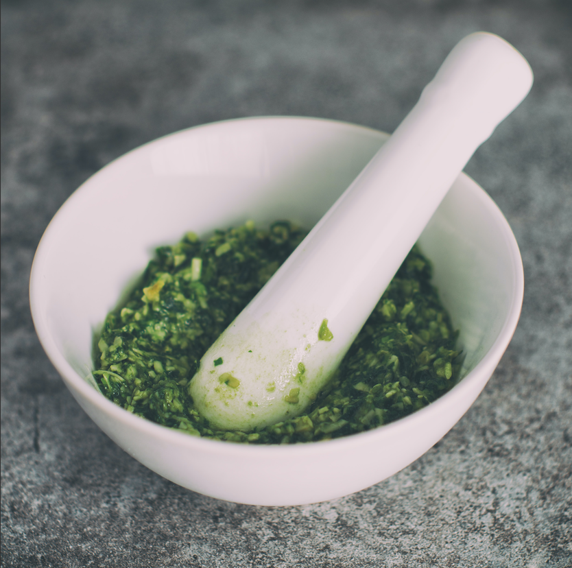

Versatile Herby Pesto
Make it with anything that you have!
Ingredients
- A bunch of soft herbs (Basil, Mint, Corriander etc)
- Handful of nuts (pine nuts, pistachio's, walnuts, almonds)
- 1 clove of garlic
- 50g parmasan cheese or any hard cheese you have in the fridge (optional)
- Sea Salt
- Olive oil
- Juice of 1 lemon
- 1/2 tsp black pepper
Method:
- Add all of your chosen ingredients to a free-standing mixer or bash in a pestle and mortar.
- It is really that easy!
- You can even make pesto without herbs and instead use leftover spinach and season with herbs instead.
- Serve with hot new potatoes, on bruchetta, on fresh pasta, pizza, roasted vegetables or even just spread on toast (its that good!).
